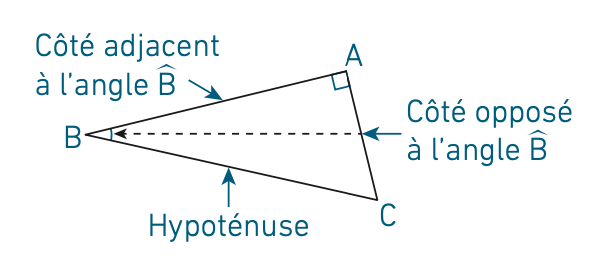
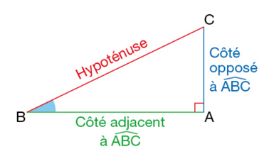
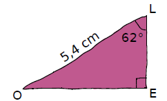
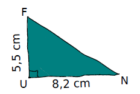

Introduction
Le mot trigonométrie se découpe en trois parties :
- Tri : trois ;
- Gono : qui veut dire angle en grec ;
- Métrie : ce qui signifie mesurer.
Donc la trigonométrie étudie les mesures dans des figures à trois angles, les triangles, et tout particulièrement dans le triangle rectangle. Elle fait le lien entre la mesure des angles aigus et les longueurs des côtés d’un triangle rectangle à l’aide de formules appelées relations trigonométriques.
À connaître — Côté opposé, adjacent et hypoténuse

À connaître — Cosinus, sinus et tangente d’un angle aigu dans un triangle rectangle
Dans un triangle rectangle :
- le cosinus d’un angle aigu est le quotient \\(\\dfrac{\\text{côté adjacent de l’angle}}{\\text{hypoténuse}}\\) ;
- le sinus d’un angle aigu est le quotient \\(\\dfrac{\\text{côté opposé de l’angle}}{\\text{hypoténuse}}\\) ;
- la tangente d’un angle aigu est le quotient \\(\\dfrac{\\text{côté opposé de l’angle}}{\\text{côté adjacent de l’angle}}\\).
Ces relations trigonométriques servent à calculer une longueur ou un angle dans un triangle rectangle.
Exemple — Utiliser le cosinus, le sinus et la tangente
Dans un triangle \\(ABC\\) rectangle en \\(A\\), on a :
- \\(\\cos\\widehat{ABC}=\\dfrac{BA}{BC}\\) (lire « cosinus de \\(\\widehat{ABC}\\) ») ;
- \\(\\sin\\widehat{ABC}=\\dfrac{AC}{BC}\\) (lire « sinus de \\(\\widehat{ABC}\\) ») ;
- \\(\\tan\\widehat{ABC}=\\dfrac{AC}{AB}\\) (lire « tangente de \\(\\widehat{ABC}\\) »).

Remarques
- Pour calculer ces rapports, les longueurs doivent être exprimées dans la même unité.
- Le cosinus, le sinus et la tangente d’un angle n’ont pas d’unité.
- Les valeurs d’un cosinus et d’un sinus pour un angle aigu sont comprises entre 0 et 1.
- La valeur de la tangente pour un angle aigu est positive.
À connaître — Propriétés
Pour tout angle aigu \\(\\theta\\) :
Explorer — Faire varier l’angle
Le triangle est rectangle et son hypoténuse mesure 10 cm. Déplace le curseur pour observer comment évoluent les côtés et les rapports.
Exemple 1 — Utilisation des relations trigonométriques pour calculer une longueur
On considère un triangle \\(LEO\\) rectangle en \\(E\\) tel que : \\(LO=5{,}4\\) cm et \\(\\widehat{OLE}=62^\\circ\\). Calculez la longueur du côté \\([OE]\\) arrondie au millimètre.

Le texte en italique ci-dessous doit être présent dans la rédaction.
- Analyse du problème :
Cette phase d’analyse est essentielle. On vérifie si les conditions pour appliquer une des 3 relations trigonométriques sont réunies. On identifie aussi les longueurs et angles connus qui détermineront la relation trigonométrique que l’on va utiliser.- Le triangle \\(LEO\\) est rectangle en \\(E\\).
- On connaît la mesure de l’angle \\(\\widehat{OLE}\\) et la longueur de \\([LO]\\), qui est l’hypoténuse.
- Le côté \\([OE]\\), dont on cherche la longueur, est le côté opposé à \\(\\widehat{OLE}\\).
- Identification de la relation trigonométrique à utiliser :
On cherche parmi les 3 relations trigonométriques celle qui utilise l’hypoténuse et le côté opposé. On va donc utiliser le sinus de l’angle \\(\\widehat{OLE}\\) pour calculer la longueur de \\([OE]\\).
On écrit la formule :\\(\\sin(\\widehat{ELO})=\\dfrac{\\textit{côté opposé à l’angle}}{\\textit{hypoténuse}}=\\dfrac{OE}{LO}\\). - Calcul :
On remplace les valeurs données dans l’énoncé :\\(\\sin(62^\\circ)=\\dfrac{OE}{5{,}4}\\).En appliquant la règle des produits en croix :\\(OE=5{,}4\\times\\sin(62^\\circ)\\).En utilisant une calculatrice :\\(OE\\approx4{,}8\\text{ cm}\\).On vérifie que la longueur trouvée est bien inférieure à la longueur de l’hypoténuse.
Exemple 2 — Utilisation des relations trigonométriques pour calculer une longueur
On considère le même triangle \\(LEO\\), rectangle en \\(E\\), avec \\(LO=5{,}4\\) cm et \\(\\widehat{OLE}=62^\\circ\\). Calculez la longueur du côté \\([EL]\\) arrondie au dixième.
Le texte en italique ci-dessous doit être présent dans la rédaction.
- Analyse du problème :
On vérifie si les conditions pour appliquer la relation trigonométrique sont réunies. On identifie aussi les longueurs et angles connus qui détermineront la relation trigonométrique que l’on va utiliser.- Le triangle \\(LEO\\) est rectangle en \\(E\\).
- On connaît la mesure de l’angle \\(\\widehat{OLE}\\) et la longueur \\([LO]\\), qui est l’hypoténuse.
- Le côté \\([EL]\\), dont on cherche la longueur, est le côté adjacent à \\(\\widehat{OLE}\\).
On écrit la formule :\\(\\cos(\\widehat{OLE})=\\dfrac{\\text{côté adjacent de l’angle}}{\\text{hypoténuse}}=\\dfrac{EL}{LO}\\). - Calcul :
On remplace les valeurs données dans l’énoncé :\\(\\cos(62^\\circ)=\\dfrac{EL}{5{,}4}\\).En appliquant la règle des produits en croix :\\(EL=5{,}4\\times\\cos(62^\\circ)\\).En utilisant une calculatrice :\\(EL\\approx2{,}5\\text{ cm}\\).On vérifie que la longueur trouvée est bien inférieure à la longueur de l’hypoténuse.
Exemple 3 — Calculer un angle
Soit \\(FUN\\) un triangle rectangle en \\(U\\) tel que \\(UN=8{,}2\\) cm et \\(UF=5{,}5\\) cm. Calculez la mesure de l’angle \\(\\widehat{UNF}\\) arrondie au degré.

Le texte en italique ci-dessous doit être présent dans la rédaction.
- Analyse du problème :
On vérifie si les conditions pour appliquer la relation trigonométrique sont réunies. On identifie aussi les longueurs connues qui détermineront la relation trigonométrique que l’on va utiliser.- Le triangle \\(FUN\\) est rectangle en \\(U\\).
- On connaît les longueurs de \\([FU]\\) et de \\([UN]\\) qui sont respectivement les côtés opposé et adjacent à \\(\\widehat{UNF}\\).
On écrit la formule :\\(\\tan(\\widehat{UNF})=\\dfrac{\\text{côté opposé de l’angle}}{\\text{côté adjacent de l’angle}}=\\dfrac{FU}{UN}\\). - Calcul :
On utilise les valeurs données dans l’énoncé et on réalise le calcul.\\(\\tan(\\widehat{UNF})=\\dfrac{5{,}5}{8{,}2}\\).Avec les touches « seconde » puis « tan » sur la calculatrice, on trouve :\\(\\widehat{UNF}\\approx34^\\circ\\).